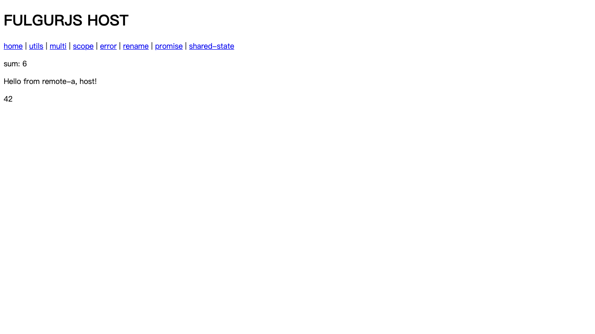
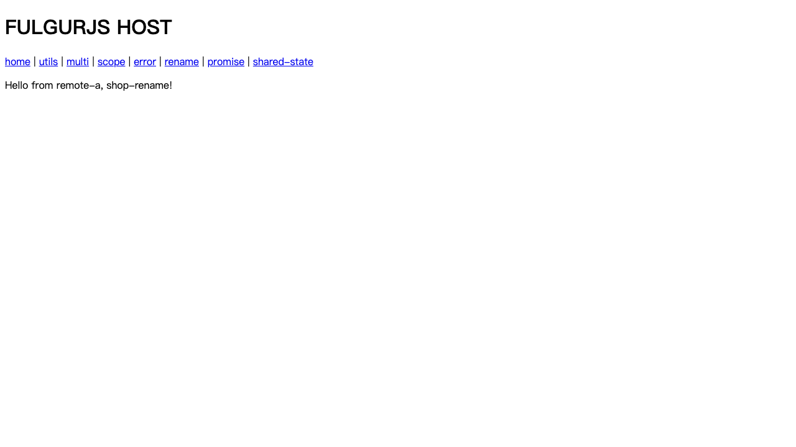
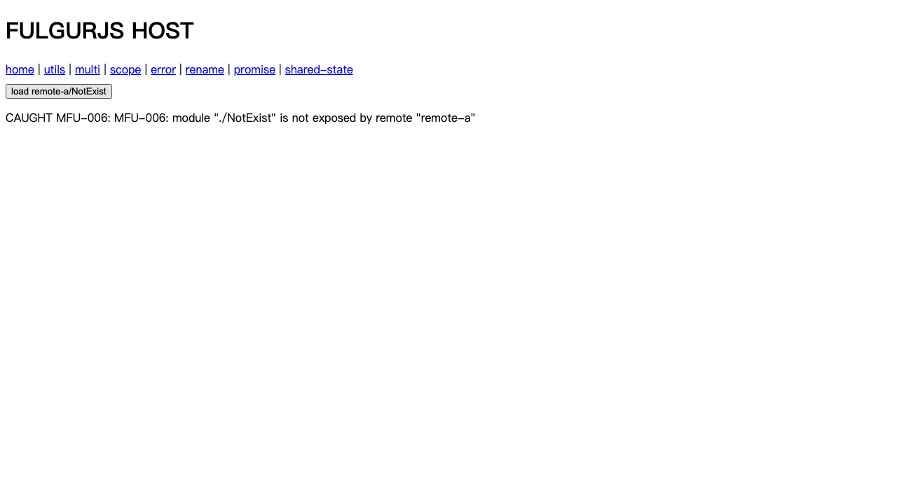
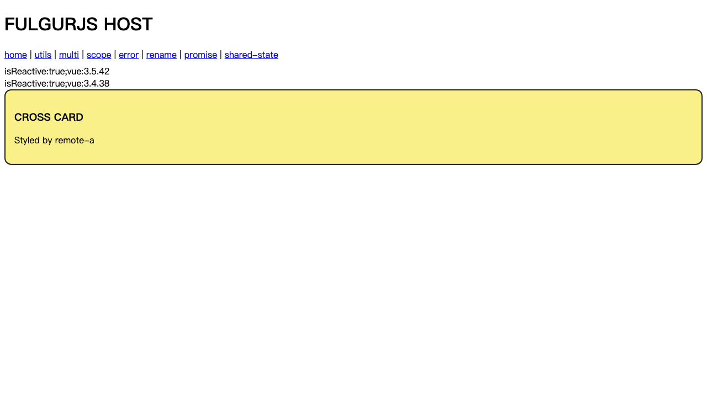

@fulgur/federation 使用手册 v0.1.0
Vite 模块联邦插件：开发环境与生产环境都能用，配置面与运行时行为全量对齐 Webpack Module Federation。 本手册中的全部截图均为真实浏览器测试（Playwright + Chromium）自动留证，测试基座包含 demo-app 真实项目副本（qiankun 微前端仓库）与独立 fixture 工程。
1. 与 Webpack 原版对齐总表
结论先行：在 Vite↔Vite 场景下，配置面与运行时行为 100% 对齐 webpack ModuleFederationPlugin；
唯二例外为 remoteType: 'script'/'var'（跨打包器互操作，P3 里程碑）与 Chrome DevTools 扩展（用
window.__FULGUR_SCOPE__ 调试出口替代）。
1.1 配置面（webpack 官方全选项）
| webpack 选项 | fulgur | 说明 |
|---|---|---|
name / filename | ✅ 一致 | 容器名 + remoteEntry 稳定文件名（默认 fulgur-remoteEntry.js） |
exposes 字符串 / 对象 {import, name} | ✅ 一致 | 对象形式 name = 稳定 chunk 名 |
remotes 的 name@url 语法 | ✅ 一致 | @ 前自报名校验；键重命名（checkout: shop@…） |
remotes 对象 {external, shareScope} | ✅ 一致 | 另支持 dev/prod 地址拆分（webpack 没有的增强） |
| promise-based remote | ✅ 一致 | 函数形式无法静态序列化，按 webpack 语义在运行时 registerRemote() 注册 |
shared 数组 / semver 简写 / 完整 hint | ✅ 一致 | 9 个 hint 全支持：eager / import / packageName / requiredVersion / shareKey / shareScope / singleton / strictVersion / version |
requiredVersion 完整 semver 语法 | ✅ 一致 | 精确/部分/^/~/比较器/连字符/||/URL 形式（URL 视为接受任意） |
strictVersion 默认值 | ✅ 一致 | 有本地副本且非 singleton → true |
shareScope 多作用域 | ✅ 一致 | 命名空间互相隔离 |
eager | ✅ 一致 | 初始 chunk 可用 + 总被下载 |
runtime / runtimeChunk | ✅ 一致 | 运行时与 init 独立产物、稳定命名 |
manifest | ✅ | fulgur-manifest.json（部署回滚 = 切 manifest 指针） |
runtimePlugins | ✅ | resolveShare / beforeLoadRemote / afterLoadRemote / onRemoteError 钩子 |
dts | ✅ | dev 源码级类型直连 |
automaticAsyncBoundary / dataPrefetch / usedExports | 🔶 增强 | TLA 自动异步边界（无需手工 bootstrap）、preloadRemote 常驻、Rollup 原生 tree-shaking |
remoteType: 'script'/'var' | 🔶 P3 | 跨打包器互操作（webpack 宿主消费 Vite remote），首发不承诺 |
| Chrome DevTools 扩展 | 🔶 替代 | window.__FULGUR_SCOPE__ / __FULGUR_INFO__ 调试出口 |
1.2 运行时行为语义（18 条逐条 e2e 验收）
| # | webpack 行为 | fulgur |
|---|---|---|
| 1 | 协商取满足 requiredVersion 的最高版本 | ✅ |
| 2 | 非 singleton 多版本共存 | ✅ |
| 3 | 已注册/已加载版本永不替换（first-wins） | ✅ |
| 4 | 同版本按 uniqueName 决胜 | ✅ |
| 5 | init() 收养语义：双向供给、兄弟 remote 互享、循环守卫 | ✅ |
| 6 | 同一容器换 scope 重复 init → 抛错 | ✅ |
| 7 | 容器 API get/init 可手写协议直用 | ✅ |
| 8 | singleton 冲突 → warning + 用已注册唯一实例 | ✅ |
| 9 | strictVersion 不满足 → 抛错（MFU-003） | ✅ |
| 10 | import: false 无匹配 → 抛错（MFU-004）；有 fallback → 用本地副本 | ✅ |
| 11 | shareKey 重定向（lodash-es ↔ lodash） | ✅ |
| 12 | 多 shareScope 隔离 | ✅ |
| 13 | eager：初始 chunk 可用 + 总被下载 | ✅ |
| 14 | 动态 remote（运行时注册）+ promise remote | ✅ |
| 15 | 静态 remote 自动加载；失败 → MFU-001 错误码体系 | ✅ |
| 16 | import('app/Button') 语法 + default/named unwrap | ✅ |
| 17 | exposed 模块样式自动注入（dev style / prod css chunk） | ✅ |
| 18 | 异步边界：TLA 自动化（比 webpack 手工 bootstrap 更进一步） | ✅ |
2. 快速开始
2.1 安装
pnpm add -D @fulgur/federation
2.2 远程提供方（remote）
// vite.config.ts
import { defineConfig } from 'vite'
import vue from '@vitejs/plugin-vue'
import { federation } from '@fulgur/federation'
export default defineConfig({
plugins: [
vue(),
federation({
name: 'remote-a',
filename: 'fulgur-remoteEntry.js',
exposes: {
'./Button': './src/exposes/Button.vue',
'./utils': './src/exposes/utils.ts',
},
shared: {
vue: { singleton: true, requiredVersion: '^3.4.0' },
pinia: { singleton: true },
},
}),
],
})
2.3 宿主（host）
federation({
name: 'host-app',
remotes: {
// 单地址：dev 自动拼 @fulgur-entry.js，prod 自动拼 remoteEntry 文件名
'remote-a': 'http://localhost:5101',
// 显式拆分（推荐用于部署）
'remote-b': { dev: 'http://localhost:5102', prod: 'https://cdn.example.com/remote-b/' },
// webpack 语法 + 键重命名
shop: 'remote-a@http://localhost:5101',
},
shared: { vue: { singleton: true }, pinia: { singleton: true } },
})
2.4 业务代码（与 Webpack 完全同款）
// 动态导入（推荐）
const mod = await import('remote-a/Button')
const Btn = mod.default
// 命名/默认/别名
const { formatDate } = await import('remote-a/utils')
// 静态导入（编译为 TLA 自动异步边界，无需手工 bootstrap.js）
import Btn from 'remote-a/Button'
3. 工作原理（dev / prod 双引擎）
| 环境 | 引擎 | 机制 |
|---|---|---|
| dev | 双 dev-server 协作 | remote 的 dev server 暴露 /@fulgur-entry.js（自包含容器）与 /@fulgur-manifest.json；
宿主页面经运行时 container.init(shareScopeMap) 收养共享作用域；remote 模块的 shared 导入经
绑定门面（按需生成的虚拟模块）协商到宿主实例；HMR 通过 remote 的 vite client 直连宿主页面。 |
| prod | 构建期改写（Rollup/Rolldown） | 每个 expose 生成虚拟入口 → 独立 chunk；shared 经动态导入边界自动剥离；产出稳定文件名的
fulgur-remoteEntry.js + fulgur-manifest.json；宿主入口前置 init import 注册 remotes/provides。 |
globalThis.__FULGUR_RUNTIME__ 合一。
跨源取运行时的官方入口：getRuntime()（独立产物导出，与全局单例同一实例），
单例带 version 字段（与插件包版本同源）用于副本一致性诊断；方法面已冻结防意外覆写。
注意：exposes 目标文件（远程页面）禁止静态导入 virtual:fulgur-runtime，插件 dev 下会显式报错（见 §8）。4. 功能章节（含实测截图）
4.1 远程组件加载（webpack 同款 import 用法）
const mod = await import('remote-a/Button')

4.2 工具模块 default / named / 常量语义


4.3 双 vue 版本共存 + shared 单例
remote-a 用 vue 3.5.x，remote-b 以 vue34 别名提供 vue 3.4.38（shareKey 均为 vue）。
两卡片同时渲染，且 isReactive(host 的 reactive 对象) === true 证明单实例；网络面板 vue 预构建产物全页仅一次请求。


4.4 Share Scope 协商可视化（调试出口）
宿主任意页面可用 window.__FULGUR_SCOPE__ / __FULGUR_INFO__ 查看协商结果与加载状态。

4.5 remotes 键重命名（checkout: shop@ 语法）


4.6 promise-based remote（运行时注册）
// 构建时未知 URL：运行时注册（webpack 'promise new Promise' 的等价能力）
rt.registerRemote({
name: 'promise-remote',
promise: async () => ({ name: 'promise-remote', init: async (map) => {...}, get: async (m) => {...} }),
})
const mod = await import('promise-remote/Button')

4.7 eager shared（初始 chunk 可用）
shared: { pinia: { singleton: true, eager: true } }

4.8 错误码与错误边界（MFU-006）


4.9 远程组件样式注入


4.10 容错：kill remote → MFU-001 → 恢复


4.11 pinia 共享单例

4.12 dts 类型直连（dev 源码级补全）
宿主 dev server 启动时自动拉取各远程的 dev manifest，为每个 exposes 生成 declare module 声明，
映射到远程本机源码——补全与跳转都是源码级。产物写入 src/fulgur-types/<remote>.d.ts，
确保 tsconfig include 包含该目录即可。
declare module 'remote-a/Button' {
import type { DefineComponent } from 'vue'
const component: DefineComponent<Record<string, unknown>, Record<string, unknown>, unknown>
export default component
export * from '../../../remote-a/src/exposes/Button.vue'
}

4.13 preloadRemote（manifest 驱动精确预载）
import { preloadRemote } from 'virtual:fulgur-runtime' // 插件已全局注入
await preloadRemote('remote-a') // 按 manifest 精确预载全部 exposes chunk + CSS
await preloadRemote('remote-a', { mode: 'prefetch' }) // 低优先级预取
实测注入的 modulepreload 链接（dev）：容器入口 + 全部 5 个 exposes 的源模块—— 不做盲猜，全部来自 manifest 清单。

5. demo-app 真实项目实战（qiankun 仓库 + 模块联邦平行通道）
复制 demo-app/demo-monorepo 到插件 testbed，保持 qiankun 集成零改动，新增联邦平行通道：
demo-host（Vite 6.4.3）作为宿主，demo-bpm（Vite 5.1.4，/flowable）与 demo-lowcode（Vite 5.2.12，/lowcode）
作为远程。免登录演示路由 /main/fulgur-demo（meta.ignoreAuth）。
// admin remotes（dev/prod 自动切换，prod 走 NGINX 同源路径）
'mes-bpm': { dev: 'http://localhost:4529/flowable', prod: '/flowable' },
'mes-lowcode': { dev: 'http://localhost:4669/lowcode', prod: '/lowcode' },
shared: { vue: {singleton:true, requiredVersion:'^3.4.0'}, pinia: {singleton:true} }
<!-- 推荐用法：远程组件纳入宿主组件树 -->
const TaskCard = defineAsyncComponent(() => import('mes-bpm/TaskCard').then(m => m.default))


协商结果（dev 实测）：admin 提供 vue@3.5.40 / pinia@2.1.7；lowcode 带来 vue@3.5.22、bpm 带来 pinia@2.3.1 ——多版本条目并存，消费方按 requiredVersion 取最高满足版本。

5.1 生产环境（NGINX 8662）：真实远程产物 + 最小宿主
bpm/lowcode 生产构建产物（fulgur-remoteEntry.js + fulgur-manifest.json）部署到 NGINX 8662， 最小宿主页用纯运行时容器 API（无构建步骤）直接消费真实产物：
import { initSharing, registerRemotes, loadRemote, loadShare } from '/fulgur-runtime.js'
initSharing('default')
registerRemotes([
{ name: 'mes-bpm', entry: '/flowable/fulgur-remoteEntry.js' },
{ name: 'mes-lowcode', entry: '/lowcode/fulgur-remoteEntry.js' },
])
const TaskCard = (await loadRemote('mes-bpm/./TaskCard')).default
const vueMod = await loadShare('vue', { requiredVersion: '^3.4.0', singleton: true })

5.2 线上环境案例清单（后台菜单配置的 27 个子应用页面）
以下页面由后台动态菜单配置，当前经 qiankun 按 /flowable/、/lowcode/ 前缀路由到子应用加载。
数据来自后台菜单接口（sys/permission/getUserPermissionByToken）实测返回。迁移到模块联邦后，
这些页面将全部以"页面组件 exposes + defineAsyncComponent 按需加载"方式引用，qiankun 不再参与。
mes-bpm（flowable）21 个页面
| 后台菜单路由 | 业务 | 迁移后的 expose 条目 |
|---|---|---|
| /bpmTask/flowable/bpm/task/todo | 待办任务 | ./pages/bpm/task/todo |
| /bpmTask/flowable/bpm/task/done | 已办任务 | ./pages/bpm/task/done |
| /bpmTask/flowable/bpm/task/my | 我发起的 | ./pages/bpm/task/my |
| /bpmTask/flowable/bpm/task/copy | 抄送我的 | ./pages/bpm/task/copy |
| /bpmTask/flowable/bpm/task/create | 发起流程 | ./pages/bpm/task/create |
| /bpmTask/flowable/bpm/process-instance/detail | 流程实例详情 | ./pages/bpm/process-instance/detail |
| /bpmTask/flowable/bpm/manager/action | 流程审批操作页（iframe 弹窗的嵌入目标，迁移核心收益点） | ./pages/bpm/manager/action |
| /baseConfig/manager/flowable/bpm/manager/model | 流程模型管理 | ./pages/bpm/manager/model |
| /baseConfig/manager/flowable/bpm/manager/model/create | 新建模型 | ./pages/bpm/manager/model/create |
| /baseConfig/manager/flowable/bpm/manager/model/update/:id | 编辑模型 | ./pages/bpm/manager/model/update |
| /baseConfig/manager/flowable/bpm/manager/model/copy/:id | 复制模型 | ./pages/bpm/manager/model/copy |
| /baseConfig/manager/flowable/bpm/manager/form | 表单管理 | ./pages/bpm/manager/form |
| /baseConfig/manager/flowable/bpm/manager/form/edit | 编辑表单 | ./pages/bpm/manager/form/edit |
| /baseConfig/manager/flowable/bpm/manager/category | 流程分类 | ./pages/bpm/manager/category |
| /baseConfig/manager/flowable/bpm/manager/user-group | 用户组 | ./pages/bpm/manager/user-group |
| /baseConfig/manager/flowable/bpm/manager/process-listener | 流程监听器 | ./pages/bpm/manager/process-listener |
| /baseConfig/manager/flowable/bpm/manager/process-expression | 流程表达式 | ./pages/bpm/manager/process-expression |
| /baseConfig/manager/flowable/bpm/manager/process-instance/manager | 流程实例管理 | ./pages/bpm/manager/process-instance/manager |
| /baseConfig/manager/flowable/bpm/manager/definition | 流程定义 | ./pages/bpm/manager/definition |
| /baseConfig/manager/flowable/bpm/process-instance/report | 流程报表 | ./pages/bpm/process-instance/report |
mes-lowcode 6 个页面
| 后台菜单路由 | 业务 | 迁移后的 expose 条目 |
|---|---|---|
| /online/lowcode/lowdev/formDesign | 表单设计 | ./pages/lowdev/formDesign |
| /online/lowcode/lowdev/reportDesign | 报表设计 | ./pages/lowdev/reportDesign |
| /online/lowcode/lowdev/graphReportDesign | 图形报表设计 | ./pages/lowdev/graphReportDesign |
| /online/lowcode/lowdev/moduleDesign | 模块设计 | ./pages/lowdev/moduleDesign |
| /online/lowcode/lowdev/reportTest/:code | 报表测试（带参） | ./pages/lowdev/reportTest |
| /online/lowcode/form/external/:type/:id | 外部表单（带参） | ./pages/form/external |
6. HMR 全链路（L1/L2/L3）
| 档位 | 验收 | 结果 |
|---|---|---|
| L1 | remote 改代码 → 宿主页面组件热替换（无整页刷新） | ✅ |
| L2 | 组件内状态保留（模板级变更走 rerender） | ✅ |
| L3 | 编译报错覆盖层 → 修复自动恢复 | ✅ |


7. 已知差异与限制（诚实版）
| # | 项 | 说明 |
|---|---|---|
| 1 | remoteType: 'script'/'var' | webpack 宿主消费 Vite remote 的跨打包器互操作 → P3 里程碑，配置时告警并按 module 处理 |
| 2 | export * from '共享包' | ESM 无法动态生成导出绑定，构建期明确报错；请用命名 re-export |
| 3 | 构建目标 ≥ es2022 | TLA（自动异步边界）要求；插件自动提升默认 target，显式低版本会告警 |
| 4 | 大型遗留宿主中远程组件的交互响应式 | 实测 demo-app admin（Vite 6.4.3 + qiankun 插件 + 3 万模块）中，远程组件内联事件可触发、
数据写入成功，但组件渲染效果偶发不随动（根因：多副本 prebundle chunk 图跨域组合的求值顺序）。 规避：① exposes 组件保持纯 Vue、避免依赖宿主 UI 库的 prebundle；② UI 库跨小版本共享需谨慎 （EP 2.9.1/2.10.2/2.14.3 混用实测存在 Illegal constructor 风险）；③ 疑难场景可改用 qiankun 原通道。 |
| 5 | SSR | 本版本不支持（hook 自动禁用并告警） |
| 7 | jeecg 规模宿主的 admin 生产构建 | demo-app admin（3 万+模块、Vite 6.4.3、node 24）构建触发
vite build-import-analysis 在 3MB 的 xlsx.mjs vendor chunk（纯第三方库，与联邦代码无关）上的 V8 栈溢出；伴随 16GB 堆 OOM、
vite-plugin-top-level-await 1.6.0 的 swc "missing field type" 连锁问题。已验证：与 shared 开关无关（最小联邦配置同样触发）；
dev 模式完全正常，bpm/lowcode 的生产构建正常。规避：关闭 inline sourcemap / vendor 分包 / 升级 vite；根治需等 vite 上游修复。
已实测可行组合（2026-09-16，testbed admin prod 构建通过并部署 8662 验证）：build.sourcemap: false + 停用
vite-plugin-top-level-await + build.target: 'es2022' 三件套（缺一即崩，勿回退）。 |
| 6 | 跨端口 HMR 的 ws 地址 | remote 的 vite client 以页面 hostname + remote 端口连 ws；本机 localhost 联调无碍，跨主机名需反代 |
8. 故障排查（错误码 MFU-0xx）
| 错误码 | 含义 | 处置 |
|---|---|---|
| MFU-001 | remote 容器/模块加载失败（网络、超时、重试耗尽、熔断） | 检查 remoteEntry 地址与 CORS；熔断默认 5 次失败后 30s 快速失败，可调 retries/timeout/fallback/breaker |
| MFU-002 | remoteEntry 自报名与配置名不一致 | 核对 name@url 的 name 与 remote 应用 federation({ name })（promise remote 仅告警） |
| MFU-003 | strictVersion 版本不满足 | 调整 requiredVersion 或关闭 strictVersion |
| MFU-004 | 共享模块缺失且无本地副本 | 去掉 import: false 或补齐提供方 |
| MFU-005 | 容器被第二个 share scope 重复 init | 检查是否存在同名 remote 配置了不同 shareScope |
| MFU-006 | 模块未被该远程 exposes | 核对 exposes 键名（自动补 ./） |
| MFU-007 | 预加载失败 | 仅上报不阻断；检查 manifest 可达性 |
| MFU-008 | 未知远程 | 在 remotes 配置或运行时 registerRemote() 注册 |
| MFU-009 | 加载到的模块没有任何导出 | 核对远程 exposes 是否指向了正确的文件（MFU-006 语义），或该文件是否缺少 export |
| MFU-010 | singleton 共享版本漂移（消费方要求与作用域实际提供不一致，使用作用域版本） | 核对双方 shared requiredVersion；确需锁版本用 strictVersion（升级为 MFU-003 抛错） |
构建/开发期错误（非 MFU 运行时码）
| 错误码 | 含义 | 处置 |
|---|---|---|
CFG-001 | name 缺失或含非法字符 | 按报错示例修正 federation name |
CFG-002 | exposes 配置形状错误 | { "./Module": "./src/path" } |
CFG-003 | remotes 配置形状错误 / 键含非法字符 | { name: url | { dev, prod } | () => Promise } |
CFG-004 | shared 配置形状错误 | ["vue"] 或 { vue: { singleton: true } } |
CFG-005 | remotes 键与 shared 键同名冲突 | 改名（webpack 同款互斥约束） |
CFG-006 | 孤岛配置（既无 exposes 也无 remotes/shared） | 核对 federation 配置意图 |
CFG-007 | remotes 对象形式误用 name@ 前缀（dev/prod 槽位整串当 URL 拼接成坏地址，运行时表现为无关的 MFU-001） | 对象形式不支持 name@ 前缀：改用键名（自报名默认取键）或字符串形式 'shop@http://host'（重命名语义） |
CFG-008 | shared 非法组合：eager + import:false（eager 需本地副本打进初始 chunk）；同 shareKey+shareScope 重复声明（版本裁决歧义） | eager 项去掉 import:false；合并重复声明或改用不同 shareKey |
DEV-001 | remote dev server 不可达（dev manifest 拉取失败） | 启动对应 remote 的 dev server；核对宿主 remotes[].dev URL 与 remote 实际 VITE_PORT/base |
DEV-002 | dev manifest 可达但 exposes 为空 | 核对 remote 的 federation exposes 配置；确认插件版本与宿主一致（DEV-006） |
DEV-003 | shared 键被 optimizeDeps.exclude（dev 裸 CJS 无 interop 风险） | 从 exclude 移除；确需移出预构建的库用 dev 专用别名兜 CJS 子路径（迁移指南避坑 #3/#4） |
DEV-004 | 已知 UMD-only 依赖（如 @smallwei/avue）不在 optimizeDeps.include | 加入 include: ['@smallwei/avue'] |
DEV-005 | remotes dev URL 端口无监听 | remote 未启动或端口错位（server.origin 同款），核对 VITE_PORT 与 remotes[].dev |
DEV-006 | 宿主/远程插件版本不一致 | 统一各应用 @fulgur/federation 版本并重启 dev server |
DEV-008 | exposes 目标文件（远程页面）静态导入 virtual:fulgur-runtime——宿主跨源加载时 在远程模块图内求值第二份副本链，破坏渲染上下文。0.4.1 起插件自动把该导入改写为惰性单例委托 （求值期零副作用、调用期转发页面级单例），不再报错；本码保留用于历史排查与极端场景说明 | 无需任何处理——任何文件直接 import { loadRemote } from 'virtual:fulgur-runtime' 即可；
调试时可绕过代理直取 (globalThis as any).__FULGUR_RUNTIME__ |
DEV-009 | 联邦虚拟模块/门面请求 404（.vite 缓存漂移）——0.4.1 起插件在 dev server 启动时自动检测插件版本变化并清除 .vite 缓存 | 重启 dev server 即可（缓存自清）；若自动清理失败按提示手工 rm -rf node_modules/.vite；
浏览器侧换全新 profile |
DEV-010 | dev 冷启动预构建窗口提示：首次启动/清 .vite 后首轮 30~60s 内联邦请求瞬时 504 / "ce" / Outdated Optimize Dep（预构建暂态，非回归） | 先真实打开一次页面预热（等网络空闲）再做验收断言；重复出现才按 DEV-009 清缓存排查 |
BLD-001 | expose 源文件解析失败 | 核对 exposes 指向的文件路径存在且可编译 |
BLD-002 | 构建目标低于 es2022（TLA 需要） | 提升 build.target（插件会自动提升并告警） |
BLD-003 | expose 目标组件含必填 props（文档化核对项，不自动告警）——联邦直挂无法像父组件传 props，必填 props 缺失会渲染崩溃（审批操作页误挂子组件事故类）。自动发射已按实测降级：宿主路由以 props 回调透传 params/query 时必填 props 可由 query 供给（流程详情页 id 实例），插件无法感知该通道 | expose 指向独立页（自带取参逻辑）或给 props 默认值；接入前人工核对 expose 目标的 defineProps 声明与取参通道 |
NGINX 生产样例（同源部署 + 反代后端）
server {
listen 8662;
root "/path/to/dist"; # 含 main/ flowable/ lowcode/
location /flowable { try_files $uri $uri/ /flowable/index.html; }
location /lowcode { try_files $uri $uri/ /lowcode/index.html; }
location /main { try_files $uri $uri/ /main/index.html; }
location /demo {
proxy_pass http://YOUR-BACKEND-HOST:8085; # 替换为你的后端地址（脱敏）
proxy_http_version 1.1;
proxy_set_header Upgrade $http_upgrade;
proxy_set_header Connection "upgrade";
}
}
常见问题
- This package is ESM only but it was tried to load by `require` —— 已在 v0.1.0+ 提供 CJS 双格式产物，升级插件后重启 dev server。
- Top-level await is not available in the configured target —— 插件默认自动提升
build.target到 es2022；若显式配置了更低版本会告警。 - Failed to resolve import "vue"（remote 侧）—— 检查是否用
packageName把 UI 库注入的 helper import 纳入共享别名。 - 端口被占/strictPort 退出 —— 旧进程未退干净：
kill $(lsof -tiTCP:端口 -sTCP:LISTEN)。 - pnpm 报 ERR_PNPM_IGNORED_BUILDS —— 在
pnpm-workspace.yaml写allowBuilds: { esbuild: true, vue-demi: true }。
9. 测试覆盖与复现方式
| 层 | 内容 | 命令 |
|---|---|---|
| 单测 | 67 用例：semver 全语法、协商全分支、AST 改写快照、容器容错/熔断 | pnpm test:unit |
| e2e dev | 10 用例：加载/语义/双版本/单例/重命名/promise/错误码/pinia/CSS/HMR | pnpm test:dev |
| e2e 容错 | 2 用例：kill remote → MFU-001 → 恢复；HMR L3 | npx playwright test --project=fault |
| e2e prod | 8 用例（隔离 NGINX 8999）：产物断言/渲染/单例/CSS/eager/容错 | pnpm test:prod |
| 体积基准 | runtime gzip 4.4KB（红线 5KB） | gzip -c dist/runtime.js | wc -c |
全部截图由 e2e 自动产出并归档于 docs/screenshots/；本手册引用的 36 张截图即上述测试的真实产物
（含 §5.2 线上案例清单：后台菜单接口实测解析的 27 个子应用页面）。